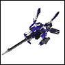
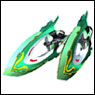
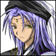

|
|||||||||||||||||||||||||||||||||||||||||||||||||||||||||||
| 【ザーフ級戦艦】 ざーふきゅうせんかん [戦艦/兵器] |
「トランスバール皇国軍」の戦艦。「エオニア軍」も元は皇国軍の為、同型艦を所持 |
|
|
| 【三公爵合体コアシップ艦】 さんこうしゃくがったいこあしっぷかん [戦艦/兵器] |
三公爵の艦とコアとが合体した形態。 |
| |
| 【シヴァ】 しう゛ぁ [キャラ/通称] | |
トランスバール皇国のにおける現状最後の皇族。 |
|
| |
| 【GA-007】 じーえーぜろぜろせぶん [戦艦/兵器] |
7番目に発見された紋章機にクロノブレイクキャノンを搭載したもの。決戦兵器とも呼ばれる。 |
| |
| 【シグルド】 しぐるど [キャラ/通称] |
トランスバール皇国軍の上層部。フルネームは「シグルド・ジーダマイア」 |
| |
| 【ジゼル級ミサイル艦】 じぜるきゅうみさいるかん [戦艦/兵器] |
（真含む）正統トランスバール皇国軍のミサイル艦 |
| |
| 【ジェノサイドボンバー】 じぇのさいどぼんばー [必殺技] |
| アニス・アジートが搭乗する紋章機「レリックレイダー」の放つ必殺技。小型の重力弾を発射して敵にぶつけ、大出力の爆発を起こす。周囲の敵をまとめて破壊する威力をもつ。 |
|
|
| 【ジェラール・トランスバール】 じぇらーる・とらんすばーる [キャラ/通称] |
トランスバール13代目皇王。シヴァの実父。エオニア戦役の際、他の皇族共々殺される。 |
| |
| 【シェリー】 しぇりー [キャラ/通称] |
エオニアの腹心を勤める女性で正統トランスバール皇国軍エルシオール追撃部隊の司令官。 |
|
|
| 【シャープシューター】 しゃーぷしゅーたー [兵器/戦艦] | |
|  | 「EDEN」製「紋章機」の1つ。形式番号「GA-006」 パイロットは「烏丸・ちとせ」 長距離戦闘に特化した性能を持っている。 必殺技は「フェイタルアロー」 |
|
|
| 【射撃場】 しゃげきじょう [施設] |
エルシオール内の施設。良くフォルテが射撃訓練をしている。 |
|
|
| 【シャトヤーン】 しゃとやーん [キャラ/通称] | |
「白き月」の管理者。 |
|
|
|
| 【ジャンクス】 じゃんくす [施設] |
「ルクシオール」の施設である宇宙コンビニの名称。 |
|
|
| 【ジュノー】 じゅのー [惑星/衛星] |
| 「EDEN」の本星。「第二次ヴァルファスク大戦」時に「ヴァルファスク」に占領される。 巨大データベース「ライブラリ」を持つ。 |
|
|
| |
| 【食堂のおばちゃん】 しょくどうのおばちゃん [キャラ・通称] |
| エルシオールの食堂をあずかっているおばちゃん。 一般的なメニューからクルーの特注まで作ってくれる気のいいおばちゃん。 （例）七色ゼリー・1000倍カレー・おでんetc |
| |
| 【シルス高速戦闘機】 しるすこうそくせんとうき [戦艦/兵器] |
ダークエンジェルのロールアウト以前にヘルハウンズ隊が運用していた戦闘機。 |
| |
|
|
| 【ステノ級高速戦艦】 すてのきゅうこうそくせんかん [戦艦/兵器] |
（真含む）「正統トランスバール皇国」軍の高速戦艦。 |
|
|
| 【ステリーネ】 すてりーね [キャラ/通称] | |
ルクシオールの機関整備員。リリィと仲が良い。機械をこよなく愛しているため、機械を壊したり、無理をさせると艦長であるタクトやココにも容赦しないほど。 |
|
| |
| 【ストライクバースト】 すとらいくばーすと [必殺技] |
「ハッピートリガー」の放つ必殺技。装備されているのは実体弾 |
|
|
| 【スパード級駆逐艦】 [戦艦/兵器] |
トランスバール皇国軍の駆逐艦、エオニア軍も元は皇国軍の為、同型艦を所持 |
|
|
| 【スペルキャスター】 すぺるきゃすたー [兵器/戦艦] | |
|  | 「NEUE」製「紋章機」の1つ。形式番号RA-004 パイロットは「カルーア（テキーラ）･マジョラム」 特性は索敵型。必殺技は「ヘキサクロスブレイク」 |
|
|
| 【正統トランスバール皇国】せいとうとらんすばーるこうこく [国家・種族] |
廃太子エオニアがトランスバール皇国を制圧後、発表した皇国名。 |
| |
| 【ゼム級戦闘母艦】ぜむきゅうせんとうぼかん [戦艦/兵器] |
（真含む）正統トランスバール皇国軍の戦闘母艦。 |
|
|
| 【セラク級突撃艦】 せらくきゅうとつげきかん[戦艦/兵器] |
（真含む）正統トランスバール皇国軍の突撃艦 |
|
|
| 【セルダール】 せるだーる [惑星/衛星] |
| NEUEにおけるゲート付近にある中心惑星。 |
|
|
| 【セルダール王朝】 せるだーるおうちょう [国家/種族] |
国王は「ソルダム・セルダール」 |
|
|
|
|
| 【1000倍カレー】 せんばいかれー [娯楽/雑貨] |
| マジークのカレーショップ「クミン」の隠しメニュー。 蘭花の為に作られる蘭花専用カレー。その辛さに他の人は到底食べられないが、蘭花を尊敬し、蘭花に近づこうとするアニスが特訓の末、食べられるようになった。 これ以降アニスの依頼で「ランティ」も度々作らされているようだ。 |
| |
| 【センパール士官学校】 せんぱーるしかんがっこう [軍団・隊] |
| 烏丸ちとせが卒業した士官学校。士官学校の中でも有名なエリート校。 |
| |
| 【ソルダム】 そるだむ [キャラ/通称] | |
|  | NEUEの中心惑星セルダールの王。 |
| |
| GA用語集にご応募いただきありがとうございました。 |
| ご応募いただいた用語については精査の上、GAII最新作「永劫回帰の刻」デラックスパック特典の小冊子、『エンサイクロペディアGA』に掲載させていただきます。 また、 ご応募いただいた方には、「GA用語集に力を貸していただいた方」としてお名前をこちらに掲載させていただきました。 この度はGA用語集にたくさんのご応募をいただき、本当にありがとうございました。 |
© BROCCOLI